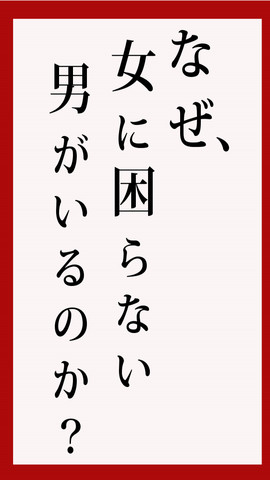

| ２０代フリーターがアラフォー女性と結婚して社長になった話 | |
| 関東恋愛研究連合会 | |
| Imperial goldcoast (2013) | |
★はじめに
本書をご購入頂き、誠にありがとうございます。ノンフィクションの実話をお楽しみ下さい。２０代後半のフリーターが結婚できた理由は、前例が無いなら前例を作り出すという気迫と行動です！ フリーターが絶対に結婚なんてドラマじゃないんだしあり得ない、という考え方が僕にはそもそも『あり得ない』考えでした。僕は２０代後半のフリーター男性で、やり手のアラフォー女性と結婚をして社長になる事が出来ました。しかし、そうなる為にはそれまでの自分を変えることが必要でした。男が自分を変えるのは、なかなか大変な作業です。しかも年齢は 20 代の後半です。もう自分の個性と言うものがほぼ確定しているので、なかなか難しいです。しかし、これをあえてやらなければいけないと決心したのは、このままでは僕の人生は灰色になってしまうと思ったからです。
★秋葉系のフリーター男子
人生で結婚をしないという事は人生が灰色になるのと同義です。何故かと言うと、一生たった一人で独身を貫かなければならないというのは、はっきり言って寂しいです。それに、妻というのは仕事上や生活上のパートナーにもなりますから、結婚をすると孤軍奮闘しなくて済むという訳です。たった一人で自分の暮らしを支えなければならないというのは、どこかで無理をします。その無理が仕事に響いたり生活に響いたりするのは、少し自分としては耐えられません。世の中には、フリーターの男性がそれこそゴロゴロしています。大体は秋葉系の男子が世の中に溢れているのではないかと思うような感じです。黒髪で黒縁メガネを掛けて、リュックサックを背負っている姿です。以前は秋葉系男子は女子から人気が高いと言われた時期もありますが、世の中の男子がみんなそんな特徴だと、やはりモテるのは一部のイケメンキャラになります。何故、こんなにフリーターだらけの世の中なのかと言うと、世の中がいわゆる不景気だからです。景気が良くないと仕事が無いので、フリーターが増えます。決してアルバイトで生活をする事を望んでいる訳では無いのにです。ただフリーターにも時間の自由があるという良い部分もありますが、世の中にはフリーターの自由時間を活かしきれていない男性が多すぎます。僕は正直焦っていました。このまま何も特徴を出すことがなくて、世の中の大半の男と同じ個性のまま埋もれてしまう人生を送っていかなければならないのかと思いました。その中で、どうフリーターとして自分の時間を充実するのかという事も同時に考えていました。以前の僕と同じで、世の中のフリーターの男性は、同じようなことを考えて日々悩んでいると思います。学校では個性を出すことよりも、右に同じを教えられて、現在に至る僕達です。一部の勝ち組だけが、有名企業に就職して正社員になる道を与えられて、結婚生活も送ることが出来ると思っている訳です。しかし、大学から就職と言う黄金ロードを進めなかった僕達は、一体どうすれば、この現状と将来も同じ状態を抜け出せるのでしょうか。それに対して答えを出す為には人と違った努力をして、人と違った道を探し歩まなければなりません。僕は、それを僕なりに試行錯誤して現状を抜ける努力をしました。その結果が、冒頭にご紹介した現在の妻との結婚です。ただ、この結果は人と違う色々な努力を日ごろから積み重ねてきた結果であり、決してそれは単なるラッキーではありませんでした。普通だったら、フリーターの僕が何も特徴を持たずに彼女に選ばれることはなかったはずです。でも、僕はそれを可能にしてみました！僕が出来たという事は、僕では無くてもそれが出来るという事です。ですから、世のフリーター男子はもっと勇気を持って欲しいのです。フリーターが結婚出来たという事はそれこそ、世の中のフリーター男子の目指すものなのではないかと思い、ここに執筆しようと思った次第です。アルバイト生活からの抜け道は、特別な一部の人にだけあるのでは無く、全てのフリーターにあるものなのですが、アルバイト生活の抜け方について皆が皆分からないのです。方法が分からないというたったこれだけの事で、苦労をしているフリーターに対して、僕は「もっと身の周りを違う角度で見てみてください」と声をかけたくなります。
★資格取得が結婚の決め手
ものは考えようです、資格も「こんな資格役に立たない」という通説を覆す自論があれば、その資格は役に立ちます。ちなみに、彼女と出会う前の僕には、貯金はほとんど無く、資格も簿記２級とＩＴパスポートといった一般的なものしか持っていませんでした。しかし、こう思っていたのは実は僕だけだったのです。結婚した後に彼女に訊いたところ、『資格を持っていたのが結婚の決め手になった』とはっきり教えてくれたのです。これは、一体何故なのでしょうか？僕としては、資格に関しては、モテようと思って修得したものではありませんでした。ただ単に、僕は簿記 2 級に関しては中学校の頃に修得しているので、それを教えたら彼女は尊敬の眼差しを向けてくれたことは事実です。しかし、中学校の頃女性にモテようと思ってしていた訳ではけっしてありませんでした。ただ、僕の家族がエリート意識があって、資格を取ることを家族の目標にしていたようなところがあったのです。 IT パスポートに関しても、当時フリーターだった僕は、好きなインターネットの仕事でいつか起業出来たらいいなあ・・・と思っていたので、取りました。ただし、僕には当たり前でも、どちらの資格もかなり難易度が高い資格です。彼女のような 40 代で仕事をしている人には、もちろん知名度が高い資格でもあった訳です。僕は、ここで心の中で叫びました。『資格を取っておいて、本当に良かった！まさかそれで結婚出来るなんて思わなかった・・・』だって、僕の知っている 20 代の女性に今まで資格の話しを聞かれたこともないのです。一応僕からは言ったことはありますが、相手からの反応は無反応だったので、一般的でめずらしくない資格なのだろうと思っていました。しかし、難易度が高い資格を知っていたビジネス系の妻は違いました。彼女は、自分では成功しているのだけれど、新たな分野に進出するのにそういう資格を持っている人が欲しかったのです。一体どこで何が役に立つのか分からないものです。もし、以前の僕のようにモテない日々をモンモンと過ごしている人がいるのなら、その暇な時間を資格取得の勉強に充てたら良いのではないかと、僕は声を大にして言いたいです。いつ何が、モテる原因になるのか分からないのです。僕達の世代は意外と勉強をしている世代です。ただ、みんなと同じようになることを教えられているせいで、何を選んだら良いのか分からないのです。だから、資格を取る時にも、難しい資格でそれでいて、自分が狙っている分野の女性にウケる資格が良いのではないかと思います。例えば、高校時代ヤンキーだった人が、高校時代からファーストフードのアルバイトに明け暮れて、そのままフリーターになってしまうと言うケースを僕は良く知っています。僕の友達にもそういう人がいるからです。彼らは、ヤンキーでもバイトに明け暮れていたので、高校時代も彼女が出来ると言うことはありませんでした。いかにもナンパっぽくても、意外と童貞だったりします。まず、外見や話し方が怖いので、女の子が近寄って来てくれないのです。お祭りとかに行って、思い切って女の子に声を掛けるけれど、薄暗い灯りの中で緊張で引きつった顔で『おい』なんて声を掛けると、女の子は逃げて行きます。だから、バイトに明け暮れて、勉強はしないし、就職活動もしないので、そのバイト先にフリーターとして卒業後もごやっかいになることになります。
★元ヤンキー上がりのフリーター
ところが、 10 年もその職場で働いていると、バイト先でも出世は出来ないのですが、かなりの影響力を持って来ます。そんな時に、職場に大学卒業をした女性社員が入って来ます。新卒だろうと、他の職場からの転勤だろうと、とにかく自分がいた世界とは違うのが、大卒の女性です。しかし、バイト先で影響力があるので、こういう女性に対して、本当は仲良くなりたいのに、イジメてしまうのです。『どうせ、自分には彼女のような人がなびく訳がないんだ・・・』そんなマイナス思考からイジメがエスカレートして行きます。しかし、ここで調理師の資格を取ることを考えてはいかがでしょうか。大卒の女性に資格的に及ばないとしても、自分は業務では誰よりも優れているはずです。同じバイト先に 10 年もいれば、他の人よりも仕事は出来るはずです。それなら、調理師の資格を取ることで、実力の社会的な証明になります。職場で一番仕事が出来ても、社会的な後ろ盾がないと、女性はなかなか元ヤンキー上がりのフリーターにはなびかないでしょう。しかし、そうした後ろ盾があれば、真面目な女性は意外とヤンキーの外見には弱いので、落ちます。このように、今自分がいる職場の女性をモノにしようと思ったら、それに合った自分が取れそうな資格を取ることがお勧めです。
でも、どの資格でも取って役に立つという訳ではありません。資格というものは、実際にその資格が使われるところをイメージしなければ、本当に役に立つ資格が何なのかは分かりません。ただの資格コレクターになる為の時間的余裕や資金的余裕は、僕達には無いはずです。つまり、一般的に役立つと思われている資格と、本当の意味で役に立つ資格は全く違うという事になります。例えば、国家資格は何でも役に立ちます。何故ならば「国家資格のコレを持っているんだ！」と人前で言えるからです。だから、資格には民間資格や国家資格など色々なものがありますが、『国家』資格であるという事には人に『国家』資格を持っていると『言える』だけで役立つのです。つまり、国家資格を持っていれば、それだけで国家に認められた男だと思わせることが出来ると言うことです！
意味が分からないと思われるでしょうが、資格の難易度に関わらず、国家資格は国家が認定しているというだけで強くてインパクトがあるのです。強くてインパクトがあれば、それを聞いた人との人間関係が出来る為の１つのネタになります。女性は意外と安定志向を望むので、国家資格者＝国家に認められた男と言うイメージに弱いです。資格の実用性は就職出来るとか出来ないとかそういう問題は全く考えない方が良いというのが正解なのかもしれません。何故ならば、これからの時代は自力で人間関係を作って仕事をゲットしなければならない時代です。それは、彼女や結婚に限らず、世の中でモテる男＝仕事が出来る＝コミュニケーション能力に優れている人物と言うことになります。それが、結果としてモテる男になると言うことです！という事は、会社ウケが良いかどうかももちろん大切かもしれませんが、人に話してみてどういう印象を与える資格なのかという考え方で資格を見る事は凄く大切だという事になります。資格＝人に与えるイメージ力のアップと言うことです！次に資格で役に立つのは、商売のコミュニティで尊敬される資格です。例えば、スーパーの店員が簿記を持っていても、大多数の人からは「だから、何？」と思われてしまうと思います。スーパーに入社して簿記を持っていれば経理担当になれるかもしれないと思うかもしれませんが、大多数の人はスーパーの店員に簿記の能力は期待していません。でも、もしこれが、スーパーの店員が『販売士』を持っていたらどうでしょうか。それこそ、誰でもが「おお、この店員さんは販売に関する専門的知識を持っているんだ」思うでしょう。こういう風に、自分が会社側から評価されたくて取りたい資格と、本当に顧客側から求められる顧客サービスに必要な資格は全く違うのに、大抵の人は会社に評価されたくて資格を取得してしまうから、実際の評価にはなかなか直結しないという結果になってしまうのです。つまりどういうことなのかと言うと、スーパーはフリーターになりやすい職場です。そして、そこには同じようにフリーターや離婚経験がある女性もいます。また社員の女性もいる可能性が大です。『〇〇君、販売士の資格があるんですね。色々仕事に役立つことを教えてもらえませんか？』なんて相手から誘ってくれるかも知れません。ですので、一般的には知名度が低い資格でも、自分がこの資格はこういう使い方で使うんだ。だから自分にとってその資格は絶対に必要なんだという目的意識を持って資格を取れば、その資格は凄く活用出来ます。目標＝フリーターから脱出したい！＝正社員＝その先にあるのは、彼女とのバラ色の日々！！こんな発想おかしいなんて、フリーターのみなさんなら思わないですよね？何故ならフリーターが彼女が欲しいと思った時に一番にするのは、就職活動だからです。
★地域密着型の資格でモテる
続けて、もう少し資格を取ってモテ度と人生度をアップする方法をご紹介しましょう。これは、地域でモテる男になる為の方法です。地域なんて・・・なんて思わないで下さい！今は幾らインターネットが発達していると言っても、やはり足で歩いて身近で出会えるのは、やっぱり地元です。例えば、栃木県には『那須検定』というものがあります。ハッキリ言い切ってしまいますが、那須検定に合格しているかどうかを採用条件にしている企業は恐らく栃木県に一社も無いでしょう。また、那須検定を取得したからと言って就職が有利になったりする事はほとんど無いので、那須検定を取得しようと考える人は相当少ないと思います。けれども、もしあなたがカフェのマスターで、那須にカフェをオープンしようとしていたとします。その時に、店内に『那須検定』の合格証書を飾る事が出来たらお客様にどう思われるでしょうか。間違いなく、この人は那須について詳しいという認識をされるでしょう。そこで通って来るお客さんの中には、素敵な女性がいるかも知れません。どこで誰が見ているのか分からないものです。また、那須で働く人が那須に詳しい自分というものをアピールして、より仕事上の人間関係を作りやすくする為に那須検定を持っていたら、この人はやる気があると思われるはずです。女性は意外とやる気がある男性に弱いものです。一生懸命頑張っている風なイメージが女性の母性にグッとくるのです。
そして地域検定を取っているような人は、仕事で成功する為なら幅広く色々と頑張ってやってくれるような頼もしい人だと思われる事でしょう。女性はいざと言う時に、頼れる男が強い男性像だと思っています。このように、周囲にこういった状況があると、那須検定の方が簿記よりも強い資格になります。つまり、どんな資格でも使い方によっては物凄く役に立つし、使い方を間違えるとほとんど役に立たないという事になります。ですから、恋愛で役に立つ資格や、彼女を作る為に取る資格というものは、自分でその資格の使い方を考えてみるしかないという事になります。でも、資格を活用して商売が軌道に乗って、そこで経営しているカフェのお客さんの女性と上手くやろうと思っても、『恋愛テクニック』が無ければ恋愛が成就する可能性は下がると思います。
★外見のイメチェンが、内面の自信につながる
人は外見じゃないと言うけれど、外見を変える行動が自分の内面を変える事実はあまり知られていないです。まず、恋愛テクニックについて語らせて貰うならば、僕は男は結局のところ外見だと思っています。古い考え方の日本男児の人やモテない男性は、そんな訳がないと思うことでしょう。きっと内面を見てくれると思う人は多いと思います。けれど、その内面を見てもらう以前に同じような外見の男性ばかりだと結局女性には磨いて来た内面さえも見てもらえない結果になるのです。それで、僕は思い切ってイメチェンしました！どういう事かと言うと、メガネと髪をコミュニケーションカラーである『黄色』に近いようにしたのです。つまりメガネの色を『金色』にして、髪の色を『茶髪』にしたのです。一見とんでもないような行為に見えるかも知れません。しかも、 20 代の後半ですから。しかし、これで、僕の周囲は劇的に変化したのです。つまり、僕は黒髪男子のような日本人らしさを捨てました。その理由は、日本人らしいからってモテる訳では無いからです。これは、当たり前です。例えば合コンで、黒髪の男子が 19 人いて、茶髪男子が 1 人なら、女性の視線はたったひとりの茶髪男子へ向きます。それは、めずらしいからです。しかし、今の時代は茶髪の男性も場合によってはめずらしくはありません。そこで金色の縁取りのメガネと合わせれば、他の男子よりも一歩リード出来ます。女性の心には、『え？あの人・・・何で金色のメガネを掛けているんだろう？もう少し近くへ行ってみようかな』と言う気分になります。まさに高校時代にヤンキーだった人が、社会人になってモテないからと黒髪にしていたのなら、昔の外見に戻れば良いだけだから簡単です。また、人が話しやすいか話しにくいかを考えた時に、自分なりに髪を染めている人は人と接触する機会の多い男性だと思われると考えたからです。ある意味軽そうな男性だと思われるのも、それはそれで手なのだと思います。「軽い＝女性にモテる男」そういうイメージが女性の中に出来れば、『あれっ、でも・・・なんで彼は今ここにいるんだろう？彼女と別れてフリーなのかな？』なんて勝手に勘違いをしてくれます。そうすれば、まさか女性経験がない男性だなんて思われません。女性って、前の彼女の話しや職場の女性の話しをされるのはとても嫌がるのに、モテない男って嫌なんですよね。モテる男を自分がゲットしたと言うお得感が嬉しいんです。だって、まるで自分が特別なお姫様になったような気分になりますからね。さて、僕は、２０代後半まで全く髪を染める事を考えていませんでした。つまり、とても真面目だった訳です。そして、髪を染めるという事の意味を全く理解出来ずにいました。しかし、ある日インターネット上のビジネスを学んでいる時に「売れるものを売れるところに置かなければうれない」という言葉を学んだのです。それが、いくら内面が優れていても、見た目が 19 人の黒髪男子のうちのひとりでは売れないと言うことに気が付いたのです。ああ、先入観を捨てて、売れる自分自身にならないと、恋愛は成就しないのだなあと思って髪を染めたのです。次に、僕はモテない自分自身を変える為に行動したことは何だと思いますか？これは、意外だと思われるでしょう。
★レーシングシューズ着用で出会いが加速する！？
実は、次に６０００円以上するナイキのレーシングシューズを買いました。何故レーシングシューズなのかと言うと、靴の重量が軽いからです。靴が軽いとフットワークが軽くなり、遊びに行きやすくなります。という事は、女性と出会う機会も増えますし、カフェなどに気軽に一人で行きやすくなります。僕はこの方法を実行する事で、素敵なカフェのママさんと知り合う事が出来ました。地元のカフェのママと言うのは、地域の情報をけっこう知っているものです。つまり、地元の女性がよく行く場所や好みを知っていると言うことです。これを聞くことが出来れば、随分女性の好みを知ることが出来ます。ファッション雑誌を読むよりも、実際の女の子のことが分かるので、とても良い情報源になります。また、僕はカフェのママのおかげで、地元の経営者の息子さんとも知り合う機会を得ました。これにより、僕がフリーターを脱出できる可能性は飛躍的に上がりました。
★全財産１万円からの復活
自分が外によく出る人間になるという事は、仕事でお金を稼ぎやすくなるという事です。仕事でお金を稼げると言うことは、イコール女性とデート出来る機会も増えると言うことになります。「フリーター＝給料が少ない＝デートできない＝モテない」この現実を変える為には、給料を増やす努力をすることで多くのモテない問題が解決します。自分の視点で社会を見て自分なりに行動をするという事は、世の中はどういう流れでお金が動いているのかと言うことや、どういう仕組みで社会は動いているのか実際に見たり、人に話を直接聞いたりする良い機会になります。実際に結婚が出来ない人は、こういう行動を起こさないから結婚をする事が出来ないのかもしれません。何故ならば、自分がブサイクであるかイケメンであるか以前に、今自分の身の周りにある社会で何が起こっているのか知らなければ、女性は無条件で自分についてこないからです。「外見を変える＝人とコミュニケーションを取れるように変わる」こうして、僕は自分なりに外見や趣味を変えていく事で、だんだん知り合いも増えてきたところで、インターネットの物販のコミュニティで彼女と知り合う事が出来ました。そして、フェイスブックで恋愛をするようになり、実際に会うとそのまま結婚をしてしまいました。これはとてもスピードですが、実際に自分を変えてみることで得た成果です。どうして僕が、結婚が出来たのかと言うと、僕が彼女の実家に行く時に、１万円かけて自作の手作りピザを『彼女の家族全員分』の分も持って行ったからです。そして、「食べて下さい」と彼女と彼女の家族全員にプレゼントしたからです。普通の男は、菓子折りを持って行くと思います。けれども僕は、菓子折りではインパクトが無いと思いました。やはり実際に会って頂ける訳ですから、誠意を込めなければなりません。本当の話ですが、その時僕が持っていた全財産の残り１万円を全てかけたのです。普通だとそんなバカなことをと思うでしょうが、僕は本当に、手作りのシーフードピザと、ポテトとベーコンのピザを何枚も作って実家のオーブンで焼いて、保冷剤と一緒にリュックに背負って彼女の実家に行きました。これはおそろしいくらいの重量でしたが、新幹線で 5 時間程の距離を移動しました。これだけの量を持って移動したと言うことだけでも、彼女やご両親に対してのインパクトは強かったようです。僕は文字通り全てをかけて彼女の両親に堂々と挨拶をしましたので、彼女の両親も特に結婚について、その場では反対はしませんでした。今どのような仕事に就いているのかという質問も特にされませんでした。ここは、心理戦でした。もし、僕が普通の菓子折りを持って挨拶に行ったのであれば、「あなたはどういう仕事をして、どうやって彼女を養っていくの？」と両親に必ず聞かれただろうと思います。けれども、手作りピザで『料理男子』だというイメージを先に与えてしまえば、今自分がフリーターであるという事は相手の両親は質問するタイミングを失ってしまいます。何故なら、手作り料理を持って行く方が彼女の両親との人間関係を、最初から強固に出来るからです。また、彼女は仕事が出来る人なので、どちらかと言えば僕が家庭的であると言うことをアピールした方が結婚の話しがスムーズに進むと言うこともありました。このように、フリーターがフリーターだから結婚する事が出来ないのでは無いのです。世の中一発勝負で、工夫１つで人生を全て逆転してやるという気合いが必要です。僕は実際に大逆転をして今は妻と共にとても幸せに暮らしています。人生を逆転させる為に、何が要るのかと言うと、普段の調査と勉強と地味な努力です。そういうちょっとした事で人生は決まってしまうのに、そういうちょっとした事を怠る事によって多くの男性が自分の望まない一生を送ってしまいます。僕は、そういう男性に「あとちょっとの工夫と努力があれば、もっと良い人生になるよ」と教えたい気持ちで一杯なのです。
★高い年収が欲しければ、起業家のやり手女性を捕獲せよ
フリーターが結婚出来た前例が無いなら、自分が前例を作り出すオンリーワンになればいいというだけの事です。他にも人生での成功について語らせて頂くと、例えば年収が高い事で有名な職業に弁護士がありますが、弁護士と同じ年収を得るのに超難関の資格試験に合格する必要はありません。この場合は、どうすれば良いのかと言うと、弁護士と結婚すれば良いのです。これは、発想の転換です！弁護士の行動パターンを分析し、弁護士が普段通う店をリサーチして人間関係が作れるようにし、恋愛関係に持っていけるように工夫をすれば良いのです。これは、普通の人にでも出来ます。相手の趣味をリサーチしたりすれば良いのです。けれど、皆諦めてしまうのです。何故なのかと言うと、皆、『大変な努力をしなければ成功は絶対にしない』と刷り込まれているからです。僕は資格試験を修得することで成功する恋愛事例もあると言いましたが、普通には絶対に手が届かない資格の場合は、あえてこの考えを変えることも必要だと思います。ようするに、相手によってケースを変えると言うことです。そして、確かに、大変な努力をすれば成功するかもしれませんが、それが的外れな結果になる事は意外と多いのです。意外と弁護士は、同じ弁護士は仕事仲間や商売の競争相手にしか見えないものです。そうでは無く、的に確実に当たるような調査をしてから、的に当たる為の要領の良い努力をすれば、必ずと言っていいほど的には命中します。何故ならば、ほぼ結果が出るような努力を繰り返しすれば、そのうちの１回は大抵成功するからです。このように、僕が起業家の彼女をゲット出来たのは、普段から地道な調査と、調査した結果をもとにした努力を怠らなかったからです。彼女が好きな話題や彼女が普段話すような相手とも交流をすることで知識を増やしました。そして、フェイスブックで何時間でも彼女と語れるようになるまでに身に付けたのです。つまり、彼女好みの男になると言うことです。ちなみに僕は彼女のブログを何回も読み込んで頭に叩き込みました。そうすることで、彼女が感じる不安部分を僕が口にしないようにしたのです。また、彼女が望むような答えを用意することで、彼女から好印象を得ました。つまり、努力が悪いのでは無く、努力をする方向が間違っていれば結果は出ないという事をもっと世の男性は知るべきだという事です。相手にとって理想の男性になると言うことは、衆人の理想の男になると言うこととは違います！その辺りのことをしっかりと見極めて、本当にオンリーワンになって欲しいものです。そして、僕も成功しました！と言う声を世の中のフリーター男性、モテないと嘆く男性からひとりでも多く聞きたいと考えています。
★さいごに
＜弊社その他Kindle作品＞


弊社の電子書籍をお買い上げ頂きまして、誠にありがとうございました。今後も沢山の方に楽しんでいただけるような作品を世に広めていきいたいと考えております。よろしくお願い致します。